| Protools12解説本 | |
| 篠崎奈美子 | |
| (2016) | |
セクション 1

コラボレーション機能使い方
Protools12.5にコラボレーション機能が追加されました。この機能を使えば自分と他人の作った音楽をセッションできる機能です。まずはAvidマスターアカウントにログインします。ファイルメニューからサインインをすることです。そしてウィンドウメニューのアーティストチャットを始め相手を招待し、共有することが出来ます。他人のトラックをまずダウンロードし(1)自分のトラックが完成したらまずアップロードしましょう。(2)チャットやトラックが相手から届いたら通知は(3)に来ます。(4)は現在のプロジェクトのクラウドストレージ使用量の目安です。税別月額1,200円で、5プロジェクト/20GBのストレージ（無償プランの40倍のクラウド・ストレージ容量）を獲得できます。大規模なセッションやプロジェクトを扱う場合には、税別月額3,100円で60GBのストレージと最大10プロジェクトまで拡大することができます。自分の曲のBPMやつけた矢印等をアップロードするのが(5)です。自分のトラックをアップロードや他人のトラックをダウンロードするのが(6)です。共有するのが(7)です。また(8)は作ったトラックの人の名前が表示されます。思えば自分のトラックをアップロードし、人のトラックをダウンロードし共有するだけなので簡単な機能です。リアルタイムに作業を行うためにチャット機能があります。スカイプやFacetimeで予め打ち合わせをし、トラック同士を共有するだけの簡単なアップデートです。自分や他人の作ったサウンドをお互いに共有し曲を作ってみましょう。8番のオレンジ色は相手が作業中にオレンジになり、自分が作業している間はブルーになります。何も名前がない場合は誰もいないことになります。6番が暗いグリーンの時は相手がアップロードを開始した際に表示されることになります。自分のトラックが完成したらアップロードしまた相手にダウンロードしてもらいましょう。Autoの表示は自動的にアップロードされることとなります。自動が嫌な場合は外しておきましょう。ウィンドウメニューのアーティストチャットにログインし、連絡先を押し、チャットしたい人の名前を入力すると候補が9番のように出てくるので、チャットしたい相手のプラスボタンを押しメッセージを入力しましょう。チャットというところのプラスボタン10番を押すと、招待する相手の名前が表示されるので、相手の名前を入力し招待しましょう。12.5の機能はただこのアップロードしダウンロードし、共有し、お互い作業するだけの話ですので難しそうに見えますが、簡単な手順ですので身構えなくて大丈夫ですのでやってみましょう。このアップロードとダウンロードと同じ考えでいれるのがAppleの音楽配信です。トップクリエーターの中で認められた人はここをデーターベースにレーベルに聞いてもらいCDにする方もいます。Appleの配信が早いと（私は30分とか一時間で、配信でした）耳コピで制作してもらえたり、人の価値観ですがそれが良いと思う方もいれば、リアリティがないと悲観的になる人もいます。ですがYoutubeのような違法にダウンロード出来るものよりセキュリティの高いAppleは何百倍も安全ですし、またAvidのコラボレーション機能のセキュリティも高いですから安全です。Appleの音楽配信は、いち早く音源をやり取りし、多くのリスナーに聞いてもらう手段でもあるので、Protools12で制作し、アップロードとダウンロードをProtools同士でやり、音源が完成したらAppleの音楽配信をすることも視野に入れましょう。他にAmazonで配信も有効ですが多少時間はかかるのかも分かりません。私はAppleでかなりうまくいったのでこれをデーターベースに新しいOSを取り入れたり、曲をどんどん作っています。作りすぎじゃないの？と思いますが、あっても損はしないので、多ければ多いほどいいです。駄作じゃない限り。さてProtools12のコラボレーションで色んな人とコラボレーションし、配信したりして楽しく音楽しましょう。
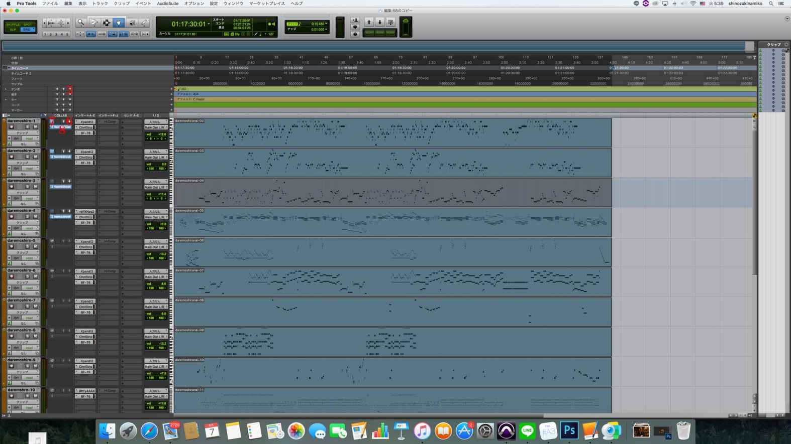
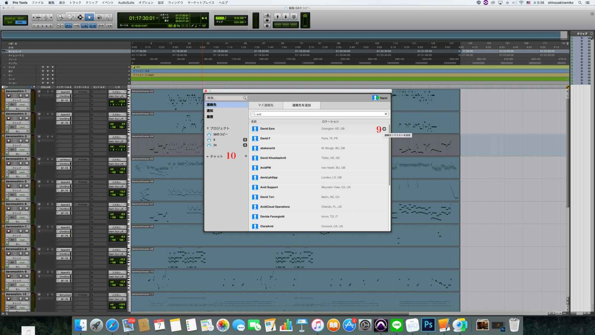
セクション 2

サンプリングについて
Protoolsを使う上で簡単ながらも上級者はかなり凝ったことをしているのが、サンプリングの世界です。ただ並べて使うだけではツマラナイので、MIDI画面から編集することをお勧めします。しかし最近は少し数も減ってきたようです。単にサンプリングでしょ？という方もいるかもしれませんが、ドラムは打ち込みで全てした方が、リアル感がでますし、全てサンプリングという訳にもいきませんし、以前にクリプトンのサントにサンプリングとは、エンジニアに音にしてもらう手間が省けているので安いというように書いてありました。私は、以前良く使っていましたが、全てほとんど欲しいものは買い占めてしまったようです。結局楽器が弾けない人は続かないんですよね。どこかで止まってしまう。楽器のドレミも分からない人が、操作を早く現場が求めるように出来るはずがなく、長年続いてる方は必ず楽器の基礎ができています。また新しく、何か流行のものを取り入れていきたいと思います。そこでProtoolsの基本操作ですが、サンプリンングを読み込むのは
①ファイル新規作成から開く
②ファイル➡インポート➡オーディオでサンプリングを読み込む
③オーディオ波形を選択し、クリックするとこのような画面が出てきます。
選択したら一番右下の完了を押す
④読み込んだら波形のサイズを調節する（小節9小節区切り）TLCで合わせる
TLC画面
右クリックでTLCを選択します。
⑤サイズを小節に合わせる
右クリック長押しでサイズを合わせる
⑥ウィンドウ➡ミックス画面を開きミキシングする
⑦最後にループを選択し、ループ数を決め、option＋Rでループする回数を入力これで完成です。後はイコライザやコンプレッサーなどエフェクトは好みでありますが、サンプリングを使えば誰でも簡単に作曲することができます。とても簡単な方法なので、誰でもできます。Beat Detectiveによりサンプリングを分割して単音にしたり組み合わせでドラムのビートを作れたりしますので、その説明をしていきたいと思います。
①イベント➡Beat detectiveを選ぶ
②一番右の小節｜拍マーカーを生成を選択し、分析するを押す"するとサンプリングオーディオが分割された線が波形にでますので、そのまま一番下の生成をクリック。これでサンプリングが分割されました。これによって、オーディオを好きに組み合わせてみることができます。組み合わせによっては迫るようなビートを生成したり、効果音なども作れますのでぜひ試してみてください。
セクション 3

OSの選び方
Protools12を使う上でパソコンを用意する必要があります。Protoolsのパフォーマンスを良 くするためにはシステム要件以上のものを購入した方がいいです。windows10はまだサポ ートもサポートされました。PC本体については以下のページの「検証済みWindows コンピューター」に明記されたメーカー/モデルのみがサポートされていますので、ご注意下さい。 http://avid.force.com/pkb/articles/ja/Compatibility/Pro-Tools-12-System-Requirements Protools12はサブスクリプションだと年間(アップグレードプラン付き)(月額) 2917円 月契約だと3500円/月で安価で、永続ライセンスは70200円です。 最新のOSにはMbox pro2はサポートされていません。 個人的に最近出回っているインターフェイスの安いもので問題ないと噂ですが8万以上のも のを購入した方が高音処理などがうまくいきます。 また192khzで録音できるものを選びましょう。 私の制作において必要なプラグインはドラムplug-in、Nexus、Xpand、ボーカルエフェク ト、サンプリングのみが必要最低限のものです。ボーカルのEQは注意した方がいいです。 インターフェイスを上等なものにしても必要になってきます。 システム要件は以下の通りです。MacBook Proの一部パフォーマンスに問題のある下記モデルは互換性が取れていない モデムのあるので購入する際は以下に注意してください。
Early 2015 MacBookPro12,1 2-Core i7 'Broadwell' 3.1 GHz Early 2015 MacBookPro12,1 2-Core i7 'Broadwell' 2.7 GHz
(Early 2015 MacBookPro の2-Core i7は、パフォーマンスに問題があります。) 互換性のあるものは、Mac:
Mac OS X 10.8.5, 10.9.0 - 10.9.5、10.10.0 - 10.10.5、または 10.11 - 10.11.3のOS を搭載したIntel® Mac
Intel® Core i5 プロセッサー
4GB RAM (ビデオ再生には8GB以上が必要)
インストールの際にインターネット接続が必要 インストールに15GBのディスク空き容量が必要
2
iLok 2オーソライズにUSBポートが必要
CoreAudio対応オーディオ・インターフェースの使用には、USBポート、
FireWireポート、Thunderboltポートなどが必要
Pro Toolsでは64-bit AAXプラグインのみがサポートされます
Windows:
Windows 7 64-bit (Home Premium/Professional/Ultimate エディション) または
Windows 8/8.1 (Standard/Pro エディション)を搭載したIntel® PC
Intel® Core i5® プロセッサー
4GB RAM (ビデオ再生には8GB以上が必要)
インストールの際にインターネット接続が必要
インストールに15GBのディスク空き容量が必要
iLok 2オーソライズにUSBポートが必要
ASIO対応オーディオ・インターフェースの使用には、USBポートまたはFireWire ポートが必要
Pro Toolsでは64-bit AAXプラグインのみがサポートされます
protools12を快適に使うために16GBは用意する必要があります。なぜなら楽曲のトラック 数が多くなるにつれ、固まったりするからです。16GBあれば問題ないでしょう。
セクション 4

ilockなど
事前にiLok IDの作成が必要でございます。
新規iLokアカウントの作成方法 (updated 2013/06/10) をご参照の上、ご作成ください。 http://akmedia.digidesign.com/support/docs/creating_new_ilok_ID_jp_201306_79469.pdf
セクション 5

基本操作
さぁ準備が整ったら、作曲の開始です。 作曲は素材を使ったりして初心者はうまく作曲しましょう。 編集ウィンドウの使い方。 編集モードセレクタはシャッフル、スポット、スリップ、グリッドがあります。 私はスリップとグリッドしか使っていません。
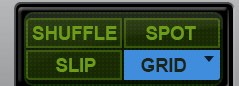 スリップは移動の際に自由に位置を指定できます。グリッドは小節、珀、分、秒にきっち り移動できるものです。
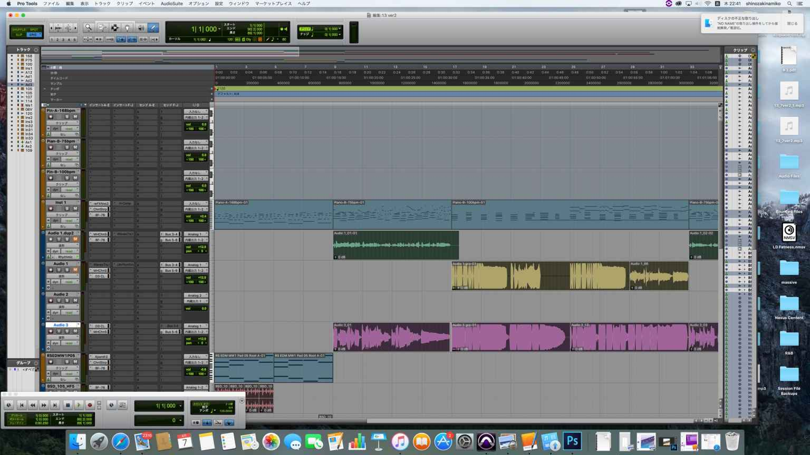 スームボタンの使い方は、ズームの右を押すと拡大でき、左を押すと縮小できます。 これはCommand @でも縮小できます。
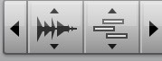
セレクタツール、セレクタツールは各トラックのリージョンなどを部分的に選択できま
す。
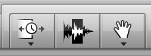
グリット値の使い方。これは2分音符、4分音符、8分音符から64音符まで打ち込みができ るものです。細かく打ち込む際は最大で64音符まで可能です。
トランスポートの使い方。これは録音、再生、早送り、巻き戻しの機能のついた主に録音 用のものです。トランスポートの赤いボタンを押してトラックの丸いボタンを押し再生す ると録音できます。
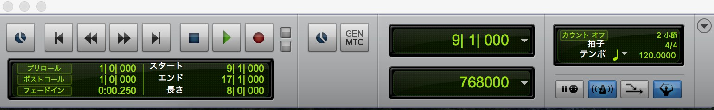 ペンシルツールはMIDIデータやオートメーションを書く際に必要なものです。 ペンシルツールで打ち込みの入力をし、MIDIデータを入力します。
フリーハンドにてマウスでボリュームを書いていけます。 ボリュームはトラックのクリップとなっているところをボリュームにするとかけます。 線はオートメーションを書く際に使えます。フェードインフェードアウトなどをしたい場 合に使います。 三角形はオートメーションを上下させるボリュームの際に使います。 正方形はオートメーションを正方形のラインで入力します。 ランダムはランダムに自由に書くことが可能です。 バラボラは放射線状に徐々にオートメーションを書ける機能です。 Sカーブはその名の通りSラインで入力可能です。 ミックスの仕方。ミックスはウィンドウからミックスを選択し、メーターを上下させるこ とで可能です。
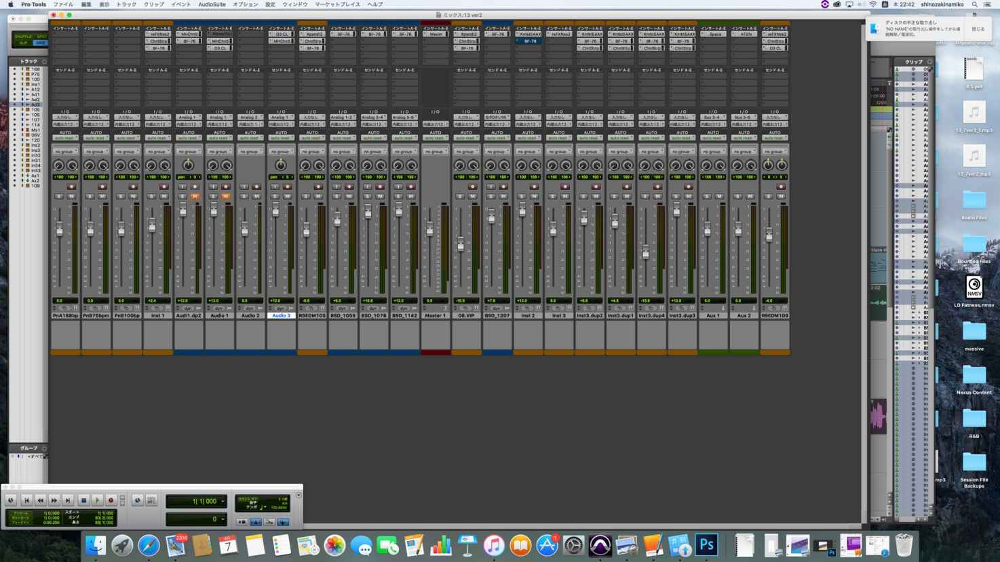 パンつまみを左右にすることで左からのみや右からのみ各パートに可能。 ソロボタンを押すことで、一つのトラックのみをミックスすることも可能です。 録音したMIDIデータをベロシティで音量も調節できます。 MIDIウィンドウを開きベロシティから上下させて変更する。
 テンポは初めの設定では120に設定されています。 これを変化させたい場合、 小節、分秒の欄にあるテンポのプラスをクリック後BPMを変更する。 入力した打ち込みをクオンタイズで整える。 クオンタイズはずれた録音MIDIの際に有効です。イベント操作からクオンタイズを選択すると何分音符か決めれます。大体8分から16にしておくといいでしょう。
テンポは初めの設定では120に設定されています。 これを変化させたい場合、 小節、分秒の欄にあるテンポのプラスをクリック後BPMを変更する。 入力した打ち込みをクオンタイズで整える。 クオンタイズはずれた録音MIDIの際に有効です。イベント操作からクオンタイズを選択すると何分音符か決めれます。大体8分から16にしておくといいでしょう。
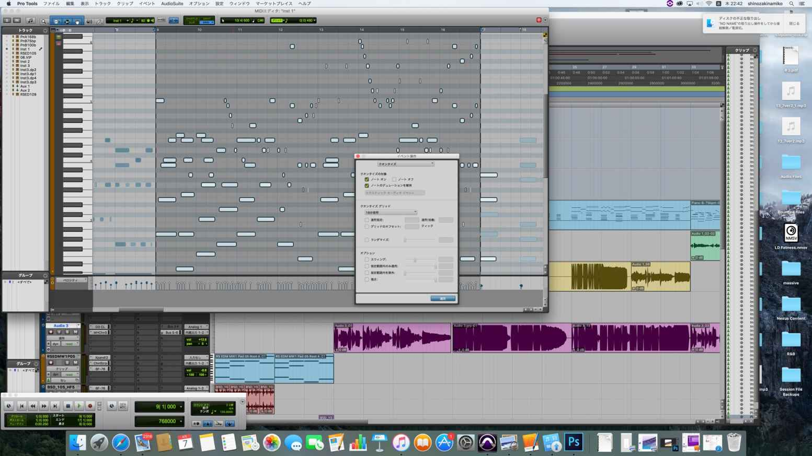
バウンスする
バウンスはファイルからバウンスの際に必ずインターリブを選びます。 MP3、Wavなどから選択し、 ファイルの保存場所を指定したら、オフラインにチェックを入れ書き出します。
トラックのリージュヨンやカラーを変更する。
各トラックのカラーはデフォルトだと茶色または青になってる部分をクリック
し変更可能です。 カラーパレットから好きなカラーを選びましょう。
トラックの名前を変更する。 InstやAudioとなってる部分をダブルクリックで変更可能です。
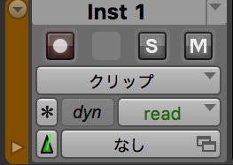
ボーカルを録音する。ボーカルは新規トラックからオーディオ、モノを選しトラック作成、赤い ボタンを を押す。 トランスポートの赤いボタンを押して再生すると録音できます。 オーディオインターフェイスにマイクを接続しておきましょう。
セクション 6

エフェクトの使い方
コンプレッサーでバランスを整えるBF76の場合（protools付属のもの）Input 24 、output 12、Attack４くらいまであげましょう。アタックはさらにばきばきに鳴らす上で重要となりますので、見落としてる方は注意してください。ほかのコンプレッサーも同じような作りですので応用できます。
waves社のプラグインを用いてミキシングする方法をもっと 説明していきます。 基本的なミキシングはコンプレッサー、EQ 、リバーブです。 ですがここでは掘り下げてもう少しいろんなプラグインを用いて解説していきたいと思い ます。 EQ Plug Tec MEQ5の使い方。使い方はプラグインを選んでLoadより楽器だとwarm ac- cousticを選びGainを少し上げるだけで簡単です。 ドラムだとWood snareなどがあります。 REDD17の使い方。これはLoadより様々な楽器を選択し、EQをかけることができます。 EQはピアノ、ギター、ボーカル、バス、ドラムにかけれます。 選ぶだけで設定は完了です。 Line EQ Broadbandの使い方。最高6バンド可能です。水色のタイプをLow shelf Hi shelf Bell Hi pass Low passのいずれかに設定しますが私はよ くLow shelfを使っています。 赤い丸を少し持ち上げれる。 以上のことで設定は完了です。 GEQ modern使い方。 一番左のボタンをクリックする。2.7 及び5,2を少し上げる。大体3dbから1dbです。 以上の設定で完了です。 Vitamin使い方。これもLoadよりお好きなプリセットを選ぶだけです。 Outputを少し上げることで音量も少し調節できます。 wavesプラグインShepes73の使い方。これもLoadより選ぶだけです。ピアノならWide Pi- ano VocalならVocal1、Vocal2、ドラムならスネア、キックとか様々用意されていますので楽器 にあったプリセットを選んでください。 コンプレッサーについてです。 API2500の使い方。これにはGainはありません。Loadよりこれも好きな楽器を選び通すだ けです。お好みでAttackやReleaseなどを変化させましょう。Super Changer AAXの使い方。 これはOutputを少し右、Inputを少し右にすることで音圧を上げれます。 上記のものを右にするほど音圧は上がります。 waves社のプラグインは大体Loadから選ぶだけですがつまみをいじる必要が多少あると言 うことですね。 Kramer Pieの使い方。これもLoadより選んで、Out- putを少し上げるだけで音圧が上がります。 Transient Masterの使い方。これはGainとAttackを上げることで音圧が上がります。 上記のものを右に回せば回すほど音圧は上がります。 CLA3A使い方。Loadよりプリセットを選んで、Gainを少し上げる。 GW Mixcentricの使い方。 outputを上げる Inputを上げる。 うっすらかけるのがコツです。 Dbx-160の使い方。 Loadよりお好きなプリセットを選ぶ。 Gainを少し上げる。 Outputを少し上げる。 以上で設定完了です。 大体wavesは同じような作りなのでこれ以上説明するほどのものでもないと思われます。 Protoolsは基本的な使い方をマスターすれば良いだけです。 インターフェイスはどの製品でも12からは使えるようになっていますので どのメーカーの製品でも使えます。 クリプトンのサンプリングを編集してどんなことでもできます。 楽曲の完成度を高めるためには根気が必要です。 一度でうまくいく楽曲はほとんどありません。詰めていけば行く程何度もやり直しが必要です。楽曲をミキシングなどする際には何度も聞くことが 重要ですし、何度も同じフレーズを確認することも重要です。 また歌詞を用意する必要もボーカルにはあります。 歌詞はメモ帳またはwordにて制作し、印刷しておくと便利です。 以上Protools12で楽曲を制作する上でパソコンの用意の仕方、互換性、Protools12使い方 エフェクトの使い方になります。皆さんも素敵な楽曲を作ってください。
セクション 7

歌詞の作り方
歌詞は以下のような歌詞を長年やっていると書けるようになります。 篠崎奈美子の書き留めた歌詞一覧です。いつかの誰かもう忘れた生きて愛する人を大事にできないのなら 君も大事自 分でできな いということを思い出した ねぇ今も覚えてるだろう 愛するべきは自分からということを ねぇ共に始めようよ いつかの約束を果たすべき夢の続きを 君は君しか出来ないことがここに残ってる最初の出会い思い出したら 心が痛くなったけど 君のすべて認められたから 今は怖くない こと どうか心に残していて いつもの自分にもうあきらめかけたとしたらどうか人を信じれなくなること 君も怖いし誰 にも許せないということを思い出した
ねぇ君も忘れないだろう 信じたいなら自分からということを ねぇ共に始めようよ いつかの話した語りあったことを 君は君しかわからないことがここに残ってる最後の傷を想い出したら 胸が苦しくなったけど 君の全て愛せられたから 今は忘れないこ と どうか心に誓えられる 最初の出会い思い出したら 心が痛くなったけど 君のすべて認められたから 今は怖くない こと どうか心に残していて 最後の傷を想い出したら 胸が苦しくなったけど 君の全て愛せられたから 今は忘れないこ と どうか心に誓えられる
こんな世の中でも一つ終わらない変わらない心が僕にあること 君に伝えたいのに伝えられ ないままここまで来たけど 君だけにはわかって欲しいから僕はここに書いたけど もし必 要なかったら捨ててくれていいよ君に伝えようとしていたものは君への終わらない気持ち だからきっといつかわかってくれ るよね? 僕が君を失いたくないからここまで頑張ってきたことを いつかのあの日の気持ち のままでずっと走って たとえ終わりが来たとしても忘れない忘れたくない想いが僕はあること 君を求めてるけど 求めてないなら忘れていいから 君はあのまま眠っているけれど僕はあの日のままで 君は輝 いているまま起きたら聞いてみて 僕の心の中にいる人は君だけ変わらないそれは だけどきっとこのまま届かないとして 君が 僕を想い出そうとしたら君まで走ってゆくことを どこかで聞いた声が聞こえてずっと走っ た 君に伝えようとしていたものは君への終わらない気持ち だからきっといつかわかってくれ るよね? 僕が君を失いたくないからここまで頑張ってきたことを いつかのあの日の気持ち のままでずっと走って
僕の心の中にいる人は君だけ変わらないそれは だけどきっとこのまま届かないとして 君が 僕を想い出そうとしたら君まで走ってゆくことを どこかで聞いた声が聞こえてずっと走っ た なんだか今日はとても力が抜けたように苦しい もうだめになってしまったんじゃないかっ て自分がどうしようもなく振り出せないこんな起伏が激しい自分だから誰かに勇気づけてもらいたいそんなの気のせいだよってもう通用しないのなら 全部勢いで自分を出してしまいたい だけ ど振り切れない自分がいてはっきりいってくれなきゃわからないよ もうやめてしまったら楽になるの? そんな簡単に自分をやめてしまえないよね なんだか昨日はとても全てがやめたように嘆いた もうやめになってしまったほうがいいよ うに自分がどうしようもなく苦しめてる こんな気丈のつかない自分だから誰かに元気つけてもらいたいそんなの投げやりだよなんてもう終点つかないのなら 全部降り出して自分を戻してしまい たい だけど投げ出せない自分がいてはっきりいってくれなきゃ言いだせないよ もうやめてしまったら楽になるの? そんな誤解で自分を冷めてしまえないよね そんなの気のせいだよってもう通用しないのなら 全部勢いで自分を出してしまいたい だけ ど振り切れない自分がいてはっきりいってくれなきゃわからないよ もうやめてしまったら楽になるの? そんな簡単に自分をやめてしまえないよね そんなの投げやりだよなんてもう終点つかないのなら 全部降り出して自分を戻してしまい たい だけど投げ出せない自分がいてはっきりいってくれなきゃ言いだせないよ もうやめてしまったら楽になるの? そんな誤解で自分を冷めてしまえないよね
毎日繰り替えさえされる何気ない顔したメロディたち きっと眼に映る景色の先は永遠じゃ ないかも きっと頭に浮かぶ想像の先は空想でもない そんな言葉並べては気のせいかなの 繰り返し 表情の背中合わせでいた自分 このままずっと走り続けていたい目の前の本当のことだけ頭に焼き付けていたい現実の幸せを隣に感じながら全てに目的があるわけじゃないことも知ったの毎日すりかえられた何気ない色したメロディたち きっと眼に超える脳裏の先は瞑想じゃな いかも きっと言葉に浮かぶ論争の果ては想像ではない そんな歌を集めては気のせいかな のやり直し 推測の背中合わせでいた自分 このままずっと走り続けていたい目の前の現実のことだけ言葉に並べていたい推理の苦しみを遠くに感じながら全てに目的があるわけじゃないことも知ったのこのままずっと走り続けていたい目の前の本当のことだけ頭に焼き付けていたい現実の幸せを隣に感じながら全てに目的があるわけじゃないことも知ったのこのままずっと走り続けていたい目の前の現実のことだけ言葉に並べていたい推理の苦しみを遠くに感じながら 全てに目的があるわけじゃないことも知ったの
優秀な人って誤認されてプレッシャーで押しつぶされそうだから 毎日苦しんでるって皆ど こかで自分のこと羽根を休めて 落ち着きたいもの 自分は何の取り柄もないなんて思ってはないけれど 少なからず何かできることだってある って そう思いたいよね
なんだか結果が思うようにいかないときでも 笑っていられるように安心のお守りが君の言 葉って思ってもいい?
いつか君が幸せに暮らせてたら僕はそっと微笑んでるかな 今は苦しくても望みは捨てない で だって頑張ってれば誰かは認めてくれるさ 本質の意味を世間に囚われて見失わないで 最良の方って汚点あるしプレッシャーで追い潰れそうだから 弱い痛みすらあるって皆どこ かで誰かのこと夢を求めて 与えられたいもの 誰かは何も弱みもないなんて思ってはないけれど 少なからず何かできることだってあるっ て そう思いたいよねなんでも自由に思うようにいかないときでも 笑って過ごせるように変革な街並みが君の癒 しって思ってもいいかな?
いつか君が幸せに暮らせてたら僕はそっと微笑んでるかな 今は苦しくても望みは捨てない で だって頑張ってれば誰かは認めてくれるさ 本質の意味を世間に囚われて見失わないで いつか君が幸せに暮らせてたら僕はそっと微笑んでるかな 今は苦しくても望みは捨てない で だって頑張ってれば誰かは認めてくれるさ 本質の意味を世間に囚われて見失わないで いつか君が幸せに暮らせてたら僕はそっと微笑んでるかな 今は苦しくても望みは捨てない で だって頑張ってれば誰かは認めてくれるさ 本質の意味を世間に囚われて見失わないで 少しづつ集って入れ替わって行ったからバランスが取れないけれど 風が二人のために吹く 頃をずっと定めている感じ 少し疲れただけ大丈夫だけれど君が必要だと思った今はただ何か歩き出そうとしているころ 手を伸ばして覗き込んでみる 岩に打ち付ける雫が 痛くても 輝く雫を集めてみよう たとえ日が落ちても君がいる影に止めるものならば巡りくる思い出と帰るのかな少しづつ祈ってすり替わって行ったからケミカルな世の中の中 意味が二人のためになる頃 をずっと狙っている感じ 少し癒せたかな大丈夫だけど君の横顔だけ見てた今はただ何か歩き出そうとしてるころ 背を正しても僻みこまない 瀬ワニに打ち付ける波間 が優しくて 優しい波を集めてみよう たとえ日が落ちても君がいるヤワに痛めるものならば想いくる輝きへと向かうかな今はただ何か歩き出そうとしているころ 手を伸ばして覗き込んでみる 岩に打ち付ける雫が 痛くても 輝く雫を集めてみよう たとえ日が落ちても君がいる影に止めるものならば巡りくる思い出と帰るのかな今はただ何か歩き出そうとしてるころ 背を正しても僻みこまない 瀬ワニに打ち付ける波間 が優しくて 優しい波を集めてみよう たとえ日が落ちても君がいるヤワに痛めるものならば想いくる輝きへと向かうかな
日々の繰り返しに飽きても飽きないことがあればそれが 力になるって思ってた 無理はしないでだって無理をして壊れたら君が大切だから 意味を完結させることはできな くても登場人物に君がいたこと いつか描いたよね
飛び越える感覚を忘れないで その期待に応えられなくてもこのままで大丈夫 君はやってい ける 日々のやり直しに尽きても尽きないことがあればそれが 近くになるって思ってる 古くはないものだって古くなって捨てるより大切だから 何もしないでいれない何もせず破 れたら意味がなくなるものだし 宿る景観たちに何もできないくても登場人物に君がいたこ と いつか伝えたよね 飛び抜ける感触を忘れないでその文化に反しなくてもこのままで大丈夫君はやっていける飛び越える感覚を忘れないでその期待に応えられなくてもこのままで大丈夫君はやっていける飛び抜ける感触を忘れないで その文化に反しなくてもこのままで大丈夫 君はやっていける
波は乱れ狂い景色と合わず君に会えない 高くそびえる樹の下におのずと続く細道を 一人君 の思いで連れて思い残さずいずれくる 深き光を一人歩いていきます 人は儚く眠りの祈りに似て むねに浮かべた思いだけが 名残惜しく音を奏でる 永遠と呼べるのか そんな疑問も連れてくる君なき海に包まれて
愛は愛し狂い隙間にさせる夢に合わない 広く立ちゆく日の下にまさしく続く探検を 一人 愛の思いで連れて深く引き合ういずれくる 通る光を一人引き連れいきます 人は踊る傾げる祈りに似て 愛に深めた思いだけが 休み休み音をつなげる 混沌と過ごすのか そんな疑問も引きでてる君なき海に包まれて
人は儚く眠りの祈りに似て むねに浮かべた思いだけが 名残惜しく音を奏でる 永遠と呼べるのか そんな疑問も連れてくる君なき海に包まれて
人は踊る傾げる祈りに似て 愛に深めた思いだけが 休み休み音をつなげる 混沌と過ごすのか そんな疑問も引きでてる君なき海に包まれて
歌詞のうまくなる方法は本を多く読むことです。日々の思いついたことをメモしていき Protoolsに鼻歌で入れていけばすんなりメロディも練習するにつれてうまくなります。 コツはコード進行のリズムを何度も聞き
リズム感のある曲を作成することです。 歌詞ありきのヴォーカルなので歌詞も自分で作れるようになりましょう。 そのために多く本を読みProtools12を使ってうまくメロディにすることです。 皆さんの歌の入った曲を聴ける日を楽しみにしています。
篠崎奈美子
チャプタ 1

その他
Strike使い方です。ストライクはサンプリングをプログラミング自分ですることによりかっこよくなります。使い方は簡単です。前も説明した通りサンプリングを4小節くらいで切ります。Command+Eで切れます。複雑にするために多くきり組み立てることもできます。その後にstrikeにいれます。Shift長押しでドラックできます。今回はBallad051と言う音色にしました。エコライザーで低音を削ります。H CompのPhat Kikでキックにパンチを出します。今回はさらに打ち込みでバスドラムを8ビートでいれています。打ち込み+サンプリングはかなり使える技です。Avidの純正プラグインAir Multi Chorusの使い方です。使い方はとても簡単。
①プリセットよりお好みのプリセットを選びます。今回はリード音源にchorusをかけています
②Rateをあげます。これはあげればあげるほど効果が強くなります
③DEPTHを少しあげる
④お好みによりLow Cutする。音が出ない場合の対処法。いきなりあれ？音が鳴らなくなったというトラブルがよくおきます。その場合の対処法です。
①リンゴマークをクリックします
②システム環境設定からサウンドを開きます
③入力をライン入力にします。
④出力をお使いのインターフェイスにしてください。これでパソコンからは音がでるようになります。Protoolsから音が鳴らない場合の対処法
①設定からプレイバックエンジンを選択する
②お使いのインターフェイスを選択するS1 Shuffler使い方です。このプラグインは音の広がりを自然に空間を作ってくれるプラグインです。左右の音の広がりはWithで軸がrotationです。またGainで音の音量を調節します。
使い方
①Loadよりお好きなプリセットを選ぶ
②Withで音の広がりを決める
③Rotationで軸を決める。だいたい三角形の広がりを作ってください。CLA Vocalの使い方です。このエフェクトは通すだけでボーカルにエフェクトがかかります。少し変わった効果を出したい場合に有効です。LoadからHelp lessを選択肢かかりすぎていたため、Terble及びCompress及びReverbなどを少し下げました。すごく効果を出したい場合はそのままでも良いのですが調節することで効果的な効果を得れますWaves Sound Shifter使い方。これはドラムなどに音を変える際に有効です。音がアップしたりダウンしたりします。今回はスネアにかけてみました。 使い方
①loadよりSmooth up を選択する
②Ratioを上げ下げする
③Modeを選択する
以上の設定で音が変わります
サビ前などのドラムのアクセントに使えます。
チャプタ 2

Native instruments
新しいものが出るようですが、Battery 4使い方です。Native instrument10に入っている新しいbattery4はかなり使えるドラムです。入っている音源です。使い方は簡単。インストールしたら右側にある音色を選んで打ち込みするだけです。多くのライブラリーがあるのでとても新しいサウンドが手に入ります。ドラムをサンプリングを使って独自のドラムを作るのはバッテリーをたちあげ、ニューサウンドからスネアなどを左クリックでカットします。その後ドラックアンドドロップでサンプリングのスネアやバスドラムなどを指定の場所に入れます。基本、曲はリズムがダメだと曲の明暗に左右するので、のりのいいリズムを作った方がいいです。battery4の使い方です。これは音色を自分で入れることができます。初めから入っているドラムでは何か物足りない時に有効です。自分の持っているバスドラムヤスネアなどの単音を入れれます。こうすることによって独自のドラムを作ることができます。①Cut cellから外したいドラムをクリックし、外す②自分の持ってるドラムをドラック＆ドロップで入れる。これだけです。これで自分自身のドラムを作ることができますので参考にしてみてください。Massive使い方。チョコレートディスコを作る。一からmassiveで音色を作る方法です。
1:OSC1をSquare saw Ⅰにする
2:OSC1のヴェールテーブルを一番右に回す
3:ntensityを真ん中にする
4:ampを真ん中にする
5:ピッチを12にする
6:OSC2をSmooth Squreにする
7:ヴェールテーブルを一番左に回す
8:intenstyを一番左にする
9:ampを一番左にする
10:ピッチを12にする
11:OSC3をSquare saw １にする
12:ヴェールテーブルを一番右にする
13:intenstyを左に回す
14:ampを一番右にする
セクション 1

ドラム作り方
ドラムの作り方（DTM）ドラムはそのドラムキットによりc1からc7までbass drum スネア ハイハットの位置が違います。まずはbass drumはどこの位置にあるのかスネアはどこにあるのか区別することが大切です。私の場合スクリーンショットのような打ち込みでプログラミングした後に、bass drum、スネア、ハイハット、シンバル、トム等のの位置を識別し配置しています。通常は0の位置がbass drumがソフトの設定の場合多いですがプラグインはそれぞれ配置が異なるので鳴らして区別し打ち込みしましょう。複雑な打ち込みの場合多くのMIDIエディタの画面に打ち込むのできちんと区別していないとめちゃくちゃな音楽になります。シンプルなbass drum、スネア、ハイハット、シンバル、トムの位置を判別しカッコ良いドラムパターンを作りましょう。8ビート、4つ打ち、16ビートなどありますがプログラムングする際はかなり凝ったことをしているのが私の音楽です。
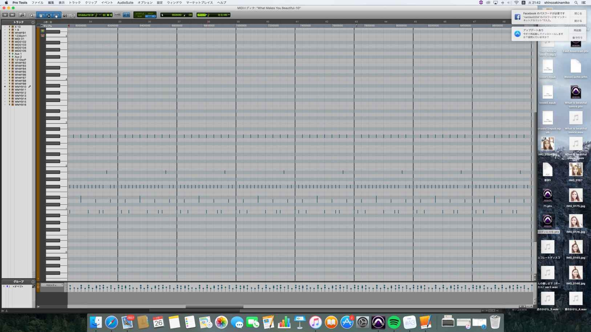
- Protools12
-
業界標準のDAW 作曲ソフト